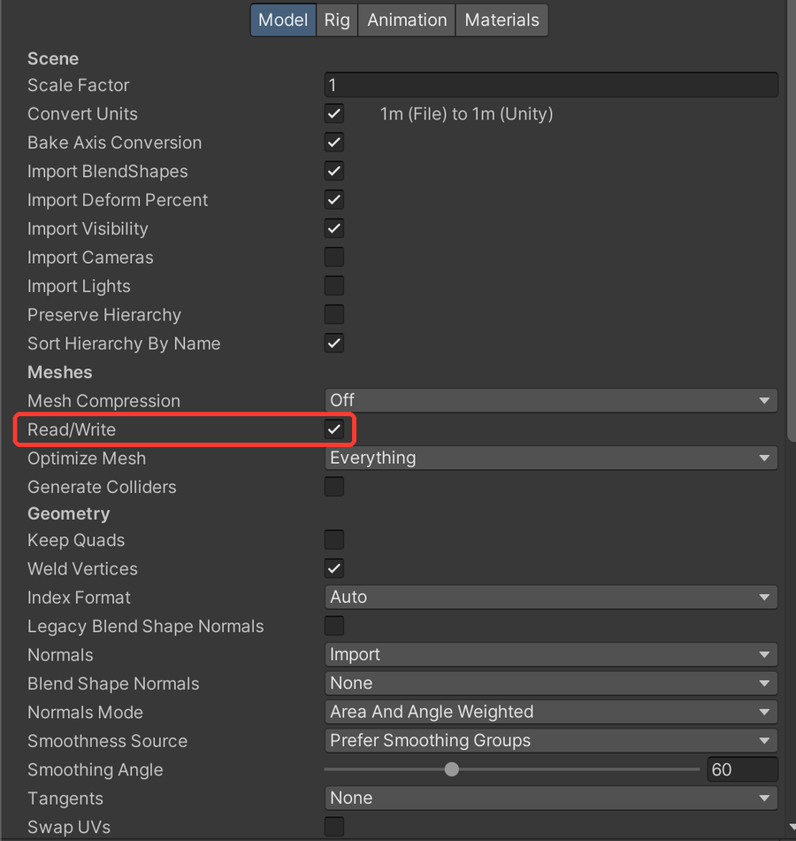

VRChat "meshes that were imported with Read/Write disabled" - fix
Quick fix
- Select the model file (.fbx) in the Project window
- In the Inspector's Model tab, check "Read/Write"

Want it checked automatically? Avatar Setup Doctor finds this in one click - free version. Try it free
What you see on screen:
This avatar contains meshes that were imported with Read/Write disabled. This must be fixed in the mesh import settings before uploading.
What it means
Read/Write is turned off in the model's (FBX) import settings. You can't upload with this setting.
Common causes
- You added a prop (chair, weapon, accessory) or a new outfit
- Read/Write was turned off when the model was imported
How to fix it
- Select the model file (.fbx) in the Project window
- In the Inspector's Model tab, check "Read/Write"
- Press Apply and upload again
Before you change anything, make a full copy of your project folder so you can go back.
Fix this automaticallyAvatar Setup Doctor adds a window to Unity. Press Diagnose and it lists what's wrong with your avatar project, why, and how to fix it - the paid version fixes many issues in one click. Free version available.
For this problem, it lists models with it turned off, and the paid version turns it on in one click.
Get Avatar Setup Doctor (Free version available)
For this problem, it lists models with it turned off, and the paid version turns it on in one click.
Get Avatar Setup Doctor (Free version available)